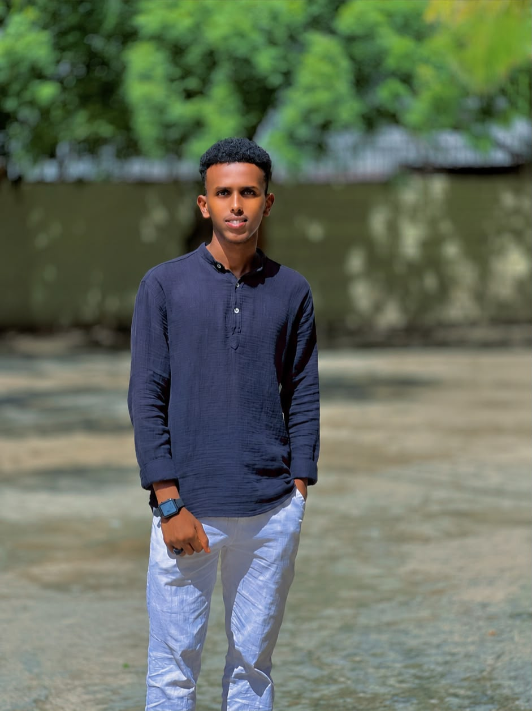

MOHAMED SAYIDALI
Web Developer & Designer
Magaca Buuxa: mohamed sayid ali
Jaamacadda: Jamhuriya University (JUST)
Kulliyadda: Computer & IT
Doorka Mashruuca: Full Website Creator
Ku soo dhawaada boggayga gaarka ah. Waxaan ahay sameeyaha iyo naqshadeeyaha kaligii dhisay website-ka Sahafi Photography. Mashruucan waxaan u qaabeeyey si casri ah anigoo adeegsanaya xirfadahayga HTML iyo CSS si aan u daboolo baahiyaha macaamiisha doonaysa adeegyo sawir-qaadis oo heer sare ah.